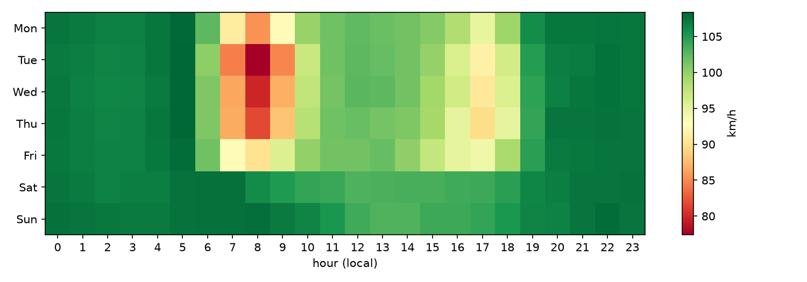
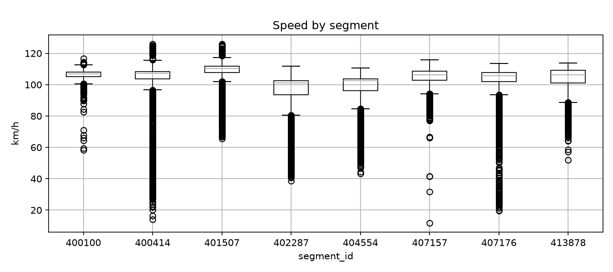
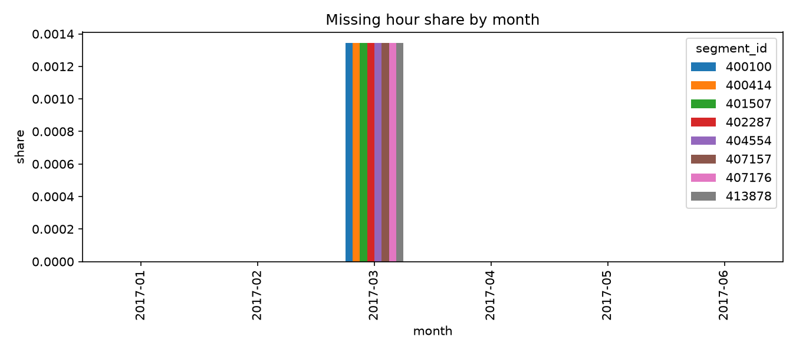
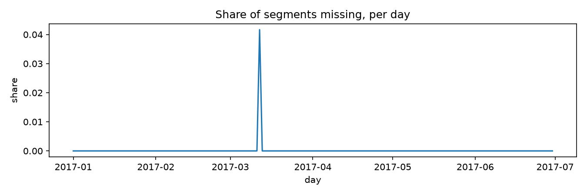
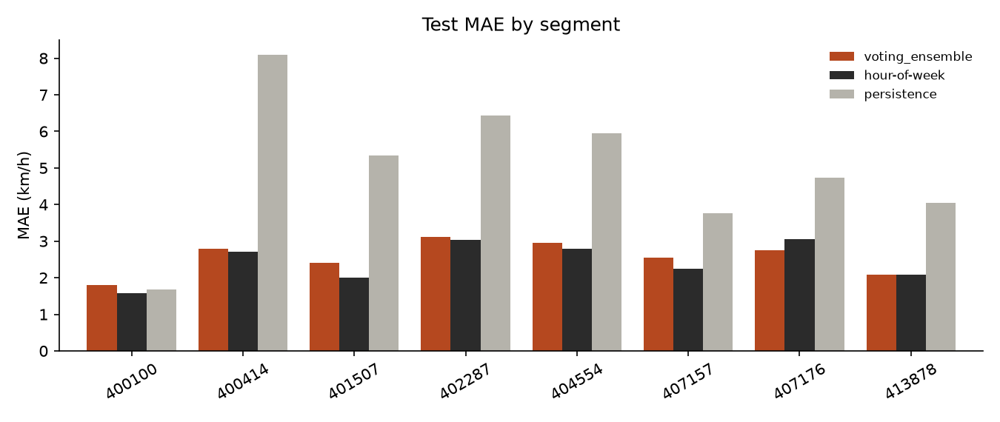
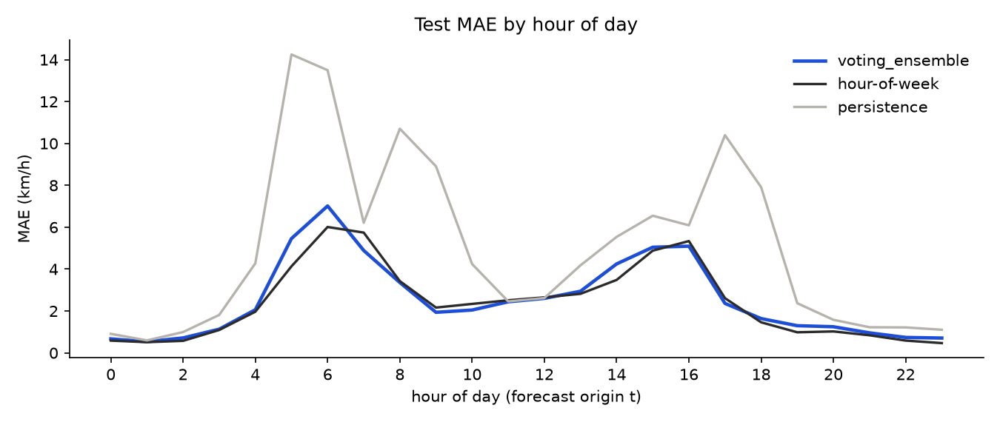
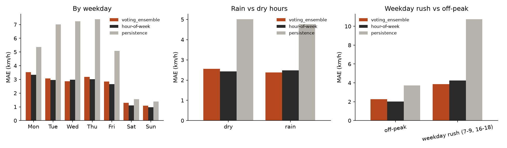

Can a model see two hours into traffic?
Drivers, freight operators and traffic managers plan around conditions that will exist later, not the ones they see now. This project asks: can a model that sees only information available at hour t predict the average speed on a road segment at hour t + 2 more accurately than two forecasts that need no learning?
One sensor, one hour
Each row is one road segment at one hour.
target_2h
Average speed at t + 2, in km/h.
MAE in km/h
Average size of the miss. RMSE and skill vs persistence are also reported.
Two simple rules
Persistence: speed now. Hour-of-week table: usual speed for this sensor, weekday and hour. A model must be judged against both.
Information allowed: speeds up to hour t (the segment and its 3 nearest sensors), weather observed at t, and calendar fields.
PEMS-BAY freeway detectors
Source. Caltrans Performance Measurement System (PeMS) detectors in the Bay Area, distributed with the DCRNN repository (Li et al., 2018). The file holds 325 sensors with 52,116 five-minute readings from 1 January to 30 June 2017, in miles per hour. Weather comes from the Open-Meteo historical API and holidays from the Python holidays package (US, California).
Segments used. Eight sensors were chosen before any modelling: at least 95% coverage and spread along the network by longitude. Hourly aggregation gives 34,752 rows (8 sensors × 4,344 hours). Speeds are converted from mph to km/h (× 1.609344).
Click a sensor
Grey dots: all 325 sensors in the file. Orange dots: the eight used. Click one to see how each method did there.
Pick a sensor on the map.
Quality checks
Stored as zero
About 0.003% of readings are exact zeros and are treated as missing. At one moment (2017-06-15 01:00) 67% of sensors read zero together: a feed outage, not a traffic jam.
Nearly full
Missing speed is 0.023% of hours: the one hour skipped by the March daylight-saving change (12 March). An hour needs at least 9 of 12 readings.
Clean and local
No duplicate rows and no gaps in weather. Timestamps are local time: weekday slowdowns appear at 07–09 and 16–18.
One frozen feed
Segment 400100 repeats one value for 10 to 24 hours on several days. It was kept and is listed as a limitation.




From raw readings to a modelling table
Click each step to see what it does.
Three leakage rules used
Only the past
Every feature uses data up to hour t. The target (t + 2) is a label, never an input. A test in src/tests checks this.
Time order with gaps
Train, validation and test are consecutive blocks in time, separated by 2-hour gaps so no target overlaps the next block.
Fit on training only
Imputation and scaling live inside the pipeline and are fitted on training rows. The hour-of-week profile also comes from training data. Tuning uses forward-chaining folds inside the training block.
Features (16) and when each is known
| Feature | What it is | Available at |
|---|---|---|
lag_1h, lag_2h | Segment speed 1 and 2 hours before t | t − 1, t − 2 |
lag_24h, lag_168h | Same hour yesterday and last week | t − 24, t − 168 |
roll_3h_mean, roll_24h_mean | Rolling mean of the segment speed; the window ends at t | up to t |
neighbour_speed_t | Mean speed of the 3 nearest sensors at hour t | t |
temperature, humidity, precipitation | Observed weather (not a forecast) | t |
hour_sin, hour_cos, dow, is_weekend, month | Calendar fields; hour is encoded as a circle | known in advance |
is_holiday | US/California public holiday flag | known in advance |
Split (hover the blocks)
| Block | From | To | Rows |
|---|
The narrow hatched bars are the 2-hour gaps. Row counts are model rows (segment-hours with all features and a target).
Two baselines, seven models
Click a card to open it. The bar shows how flexible the method is; the number is its validation MAE (lower is better).
Left out on purpose. SVR (kernel methods scale poorly with rows and need careful tuning), an MLP and an LSTM (more tuning and data than ~20,000 training rows of 16 tabular features justify, and harder to explain). The tree and linear models already cover simple-to-flexible.
How the models were judged
- Split. Chronological 60/20/20 with 2-hour gaps. Validation starts –; test starts –.
- Three separate jobs. Tuning uses forward-chaining folds inside the training block. Selection uses validation MAE. The test block is for one final report.
- Selection rule, fixed in advance: among the trained models, take the lowest validation MAE. Baselines are not candidates.
- Metrics. MAE in km/h (primary: easy to read, not dominated by rare huge misses), RMSE (penalises large misses more), and skill = 1 − MAEmodel / MAEpersistence.
- Uncertainty. A bootstrap that resamples whole days (errors in neighbouring hours are correlated) gives a 95% interval for the test MAE.
04_final_test.py and 05_export_site.py were run once, earlier than planned, following an AI coding assistant's step. 03_train_select.py was re-run at 11:22 and reproduced the same selection (deterministic seed). No model, feature or hyperparameter change was made after test results existed.The leaderboard
Click a bar to send that model to the Lab. Outlined: the model chosen on validation.
| Model | Val MAE | Test MAE | Test RMSE | Skill | 95% CI (test MAE) |
|---|
km/h; lower MAE is better. n/a: only the selected model and the two baselines were scored on test, by design; scoring every model on test would be selection on test.
Now it's your turn
Everything here runs live in your browser on the exported predictions. Change a setting and the numbers recompute. Nothing is pre-baked.
Data block
Quick scenarios
Sensors
Dates
Hours (forecast made at)
Weekdays
Period (project definition)
Holidays
Weather
The x-axis is the time being forecast (t + 2). The line for each method is the forecast it made two hours earlier. Hover the chart for values.
Scoreboard
Average miss in km/h (lower is better). All players see the same information: speeds up to now.
| Player | Rounds | Avg miss | Wins |
|---|
Where the forecasts fail
Errors below are for the selected model on the test block, next to the hour-of-week table and persistence. This analysis describes errors; it did not change the model.



Five failure cases
Chosen by stated rules, not hand-picked. Explanations are likely reasons; the data has no incident log, so none is proven.
Discoveries hiding in the results
Patterns found while analysing the errors. Every number is computed live from the data, and every card has a Try it button that sets up the Lab so you can check the claim yourself.
What this study cannot claim
One network, one half-year
Eight segments on Bay Area freeways, January to June 2017. Nothing here shows how the models behave in other cities or seasons.
Sensor quality
Zero readings are treated as missing, one network-wide feed outage was seen, and segment 400100 has a frozen feed. It was kept and flagged, not repaired.
No incident, roadworks or event data
The largest errors (cases 1 and 2) look like events no model with these inputs can anticipate.
Weather is observed at time t
It is not forecast, so the weather features are easier here than in real use.
Distribution shift
The test block is the last five weeks of the series. Patterns change with seasons, school terms and infrastructure work.
Association, not causation
The models find patterns that go with speed; they do not show what causes slowdowns.
The test run was not sealed
It was run earlier than planned (see the disclosure under Evaluation). No change followed, but the order of events is a weakness of the process.
No trained model beat hour-of-week
on validation or on test. The weekly mean is a strong baseline at this horizon.
Lab views are exploratory
The Validation view in the Lab re-fits the models on the training block to show every method's forecasts. Filters slice the data many ways; with small slices, differences can be chance. The Lab warns when a slice is small or a gap is inside the noise.
Did the models beat the baseline?
Loading results…
What this shows. At a two-hour horizon, past speeds, neighbours, weather and the calendar give a large gain over persistence, but almost all of that gain is already captured by the weekly pattern. The most useful single piece of information is the typical speed for this segment at this hour of this weekday.
What it does not show. It does not show that the model is bad in general, that these results hold for other roads or seasons, or why any slowdown happened. The paired difference to the table is small enough that its interval includes zero, so the honest claim is “no improvement shown”, not “worse”.
Next steps. Add incident and event data, which is where the biggest misses come from; use weather forecasts rather than observations; try a model that predicts the difference from the weekly profile; and repeat on more months with the test block kept sealed until the end.
Run it yourself
Python 3.11 or newer; seed random_state=0 throughout. requirements.txt pins pandas<3, because pandas 3 cannot read the HDF5 speed file through PyTables. Raw data is not in the repository: download pems-bay.h5 and graph_sensor_locations_bay.csv into data/raw/ as described in data/raw/SOURCES.md.
git clone https://github.com/Shrey0407/traffic-flow-prediction.git
cd traffic-flow-prediction
python -m venv .venv
.venv\Scripts\Activate.ps1
pip install -r requirements.txt
python src/01_build_dataset.py # hourly table, segments, neighbours, weather, holidays
python src/02_features_split.py # features and the 60/20/20 split with gaps
python src/baselines.py # persistence and hour-of-week
python src/03_train_select.py # tune on train, choose on validation
python src/04_final_test.py # run ONCE: scores the test block
python src/05_export_site.py # writes docs/data/*.json
python src/06_export_playground.py # writes docs/data/playground.json (the Lab)
pytest src/tests # leakage and pipeline checks
python -m http.server 8000 --directory docsExpected key outputs. pytest: 8 passed. results/validation_metrics.csv: hour_of_week lowest, voting_ensemble the best trained model. results/final_test_metrics.csv: one row with the test MAE, RMSE, skill and 95% interval shown on this page. Open http://localhost:8000; opening index.html directly will not load the data.
Author, AI use and sources
Author: Shrey Mevawala.
AI use. An AI assistant (Claude, Anthropic) helped with planning, code scaffolding, explanations, drafting and the interactive Lab. What it did and how each output was checked is recorded in AI_USE.md; the contribution log is in CONTRIBUTION_LOG.md.
Citations. Li, Y., Yu, R., Shahabi, C., Liu, Y. (2018). Diffusion Convolutional Recurrent Neural Network: Data-Driven Traffic Forecasting. ICLR 2018 (DCRNN and the PEMS-BAY files); Caltrans PeMS; Open-Meteo historical weather API; holidays Python package; scikit-learn; XGBoost. Charts are drawn with plain SVG and canvas, no chart library.